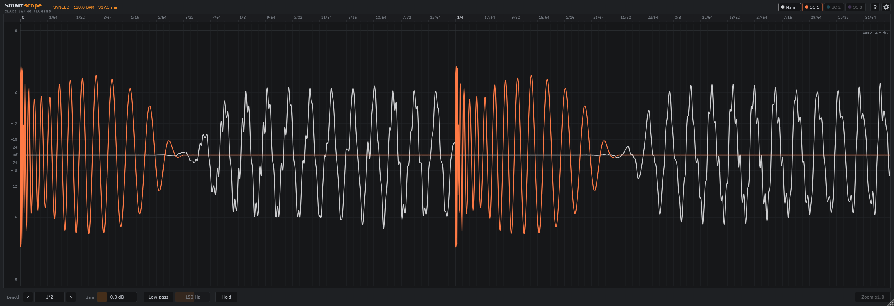
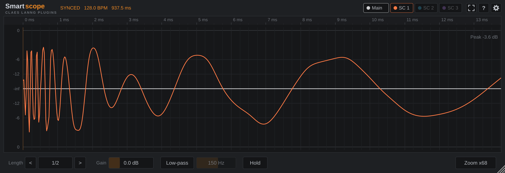
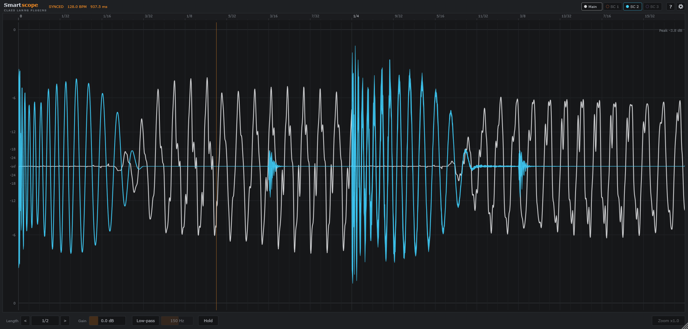
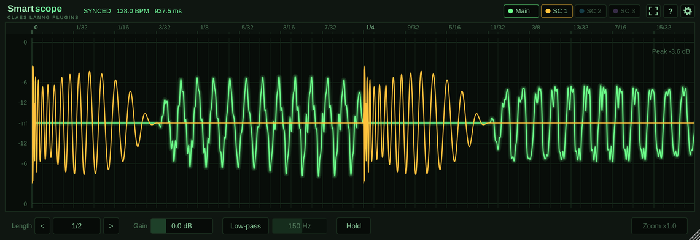
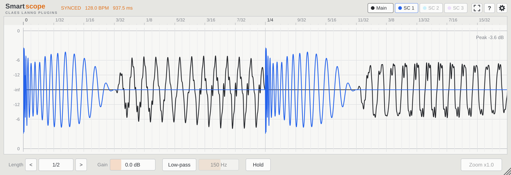
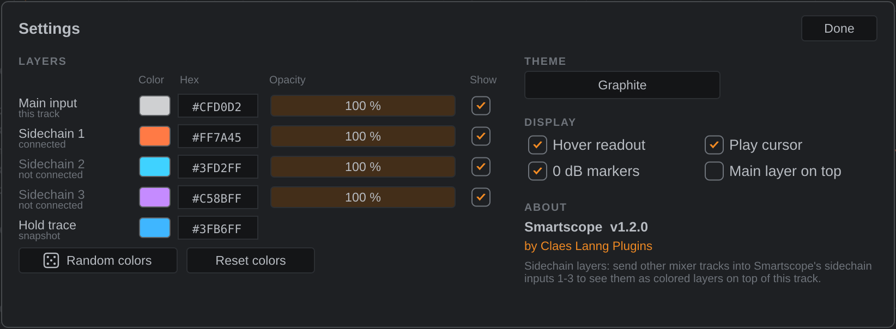

Smartscope
See whether your kick and bass are in phase, locked to the tempo of your track.
Version 1.2. Free. VST3 for Windows 10 and 11 (64-bit), made for FL Studio.

What it does
An oscilloscope that follows your project's tempo and song position, so the picture stands still while your loop plays.
- Tempo sync
- The window always starts on the beat. Pick a length from 1/16 to 4 bars.
- Sidechain layers
- Send up to three other tracks into Smartscope and see each as its own colored layer.
- See the polarity
- A linear scale shows which way each wave swings, so kick and bass fighting each other is easy to spot.
- Zoom to single samples
- Scroll in until you see every sample. The grid switches to milliseconds, and hovering shows the exact time and level.
- Low-pass for the display
- Hide everything but the low end. It never changes your audio, and it still works while playback is stopped.
- Hold and compare
- Keep a snapshot as a reference, nudge the bass, and see what changed.
- Any size
- From a small strip to a whole second monitor, up to 7680 × 4320. The controls make room as the window shrinks.
- Scope only
- One click hides the header and controls, so only the waveform is left.
Zoom in on the hit
The first 14 ms of a kick, zoomed in 68 times. You can see the click, then each cycle getting longer as the kick drops to its pitch. Line your bass up against this, and you know to the millisecond where it starts.

Move around with the mouse
Scroll to zoom in, then click and drag to slide through the window. Here Smartscope is zoomed in 5 times on a two-bar window: the hand grabs the next kick, pulls it to where the first one was, and later drags it back.
Make it as big as you like
Drag the corner anywhere from a 240 × 110 strip up to 7680 × 4320. Detach the window in FL Studio and give it a whole second monitor, a TV or a tablet, or tuck it into a corner. The grid and dB labels get finer as it grows, and the controls make room as it shrinks. One click on the corners button hides everything but the waveform. The size is saved with your project.

Show the kick on the bass track
How to set up a sidechain layer in FL Studio.
- Put Smartscope on the mixer track you want to look at, for example the bass.
- Select the kick's mixer track. Right-click the small arrow under Smartscope's track and choose Sidechain to this track.
- In Smartscope's window, click FL's gear icon, open Processing, and set Sidechain 1 to the kick's track number.
- The SC 1 button in Smartscope lights up and the kick appears. Repeat for sidechains 2 and 3.
Your colors
Four themes, and a color and opacity for every layer. Pick a color, type a hex code like #556BAA, or roll the dice for new sidechain colors that stay easy to see. Your choices are saved with the project.





Install
Needs Windows 10 or 11 (64-bit) and a DAW that loads VST3 plugins, such as FL Studio. Takes about a minute.
- Download
Smartscope-v1.2.0-Windows-VST3.zipand unzip it. - Copy the
Smartscope.vst3folder intoC:\Program Files\Common Files\VST3. - In FL Studio, open Options, then Manage plugins, and click Find more plugins. Add Smartscope to a mixer track.